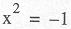
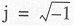

| < BACK | Make Note | Bookmark | CONTINUE > |
Complex Numbers
A long time ago, mathematicians were stumped by the following equation:
The reason for this is because any real number (positive or negative) multiplied by itself results in a positive number. How can you multiply any number with itself to get a negative number? No such real number exists. So in the eighteenth century, mathematicians invented something called an imaginary number i (or j— depending what math book you are reading) such that:
Basically a new branch of mathematics was created around this special number (or concept), and now imaginary numbers are used in numerical and mathematical applications. Combining a real number with an imaginary number forms a single entity known as a complex number. A complex number is any ordered pair of floating point real numbers (x, y) denoted by x + y j where x is the real part and y is the imaginary part of a complex number.
Here are some facts about Python's support of complex numbers:
-
Imaginary numbers by themselves are not supported in Python
-
Complex numbers are made up of real and imaginary parts
-
Syntax for a complex number: real+imag j
-
Both real and imaginary components are floating point values
-
Imaginary part is suffixed with letter "J" lowercase ( j) or upper (J)
The following are examples of complex numbers:
64.375+1j 4.23-8.5j 0.23-8.55j 1.23e-045+6.7e+089j 6.23+1.5j -1.23-875J 0+1j9.80665-8. 31441J -.0224+0j
Complex Number Built-in Attributes
Complex numbers are one example of objects with data attributes (Section 4.1.1). The data attributes are the real and imaginary components of the complex number object they belong to. Complex numbers also have a method attribute which can be invoked, returning the complex conjugate of the object.
>>> aComplex = -8.333-1.47j >>> aComplex (-8.333-1.47j) >>> aComplex.real -8.333 >>> aComplex.imag -1.47 >>> aComplex.conjugate() (-8.333+1.47j)
Table 5.1 describes the attributes which complex numbers have:
|
attribute |
desciption |
|---|---|
|
num. real |
real component of complex number num |
|
num. imag |
imaginary component of complex number num |
|
num. conjugate() |
returns complex conjugate of num |
| Last updated on 9/14/2001 Core Python Programming, © 2002 Prentice Hall PTR |
| < BACK | Make Note | Bookmark | CONTINUE > |